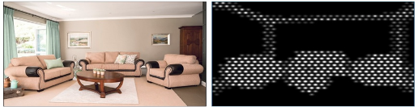

Prior to joining UCSB, I received a PhD in Computer Science and Systems Engineering from Universidad de Zaragoza, Spain, as well as a BS in Chemical Engineering and a MS in Chemical Engineering from Universidad de Valencia, Spain.
My main research interests lie in Computer Vision and Deep Learning. I'm particularly excited about conducting research in simulated prosthetic vision (SPV) and building immersive virtual reality (VR) systems of SPV that combine computational modeling of the brain with different computer vision algorithms.
Efficient visual object representation using a biologically plausible spike-latency code and winner-take-all inhibition system Melani Sanchez-Garcia*, Tushar Chauhan, Benoit R. Cottereau, Michael Beyeler CVPR2022-NeuroVision poster ·
arXiv
Indoor Scenes Understanding for Visual Prosthesis with Fully Convolutional Networks Melani Sanchez-Garcia*, Ruben Martinez-Cantin, José J. Guerrero 14th International Joint Conference on Computer Vision, Imaging and Computer Graphics Theory and Applications, VISAPP 2019 paper ·
poster

Structural and object detection for phosphene images Melani Sanchez-Garcia*, Ruben Martinez-Cantin, José J. Guerrero Also presented at Women in Computer Vision Workshop, ECCV 2018 poster ·
arXiv
{kind=link}